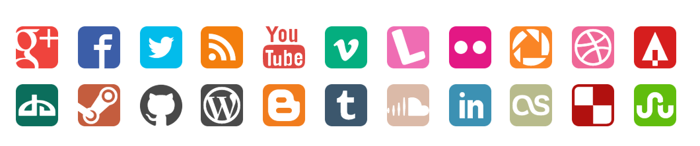

css sprite，也称css精灵/雪碧图，是一种处理网页图片的方式，它将网页中要用到的零散的图片整合到一张图片中，这样网页加载的时候只需要加载一张图片，然后通过定位(background-position)定位到图片中的某个需要用到的部分，就可以实现与单张图片相似的效果。
这样处理网站要用到的图片可以：
但是当屏幕分辨率很高的时候(比如retina屏)，因为像素密度变高了，原来一个像素的点需要被渲染成四个像素，如果使用原来的图片会显得很模糊，解决方法有：
svg sprite可以说是css sprite的升级版，因为是基于svg的，所以svg的优势他全有：
我们不仅可以用svg sprite避开css sprite在不同分辨率下的坑，还可以为svg sprite中的每个元素独立上色。

svg中组织元素的标签有<defs>，<g>，<symbol>，<use>
<defs>用于定义图形元素，通过它定义的元素不会直接显示在svg图像上，使用时需要<use>来引入。它的子元素可以是：<g>，<symbol>以及任何图形元素。<g>元素对于svg来说就好像div对于html一样，它是svg中最常见的组织元素的标签，对<g>元素的变换会应用到它所有的子元素上。<symbol>用于定义可重复使用的符号，它定义的图形不会直接显示，除非用<use>引入。有preserveAspectRatio和viewBox属性defs+g） || symbol 例子：
假如我们有几个github.svg， weibo.svg， wechat.svg，zhihu.svg四个文件（这些文件可以从iconfont等网站很方便地获取.
我们可以手动新建一个sprite.svg如下，文件中每个形状都被加上一个id，在需要引入的地方通过引用id引入图形。
1234567891011121314151617
<svg xmlns="http://www.w3.org/2000/svg" width="300" height="300"> <symbol id="github" viewBox="0 0 3000 3000"> // github shape code </symbol> <symbol id="wechat" viewBox="0 0 3000 3000"> // wechat shape code </symbol> <symbol id="weibo" viewBox="0 0 3000 3000"> // weibo shape code </symbol> <symbol id="zhihu" viewBox="0 0 3000 3000"> // zhihu shape code </symbol> <use href="#wechat" x="0" y="0"></use> <use href="#weibo" x="30" y="0"></use> <use href="#github" x="60" y="0"></use></svg>
注意，文件中symbol的viewBox属性可改变原svg视窗大小。
实际工作中，手动合并多个svg文件，再给他们想id，再use的方式不现实，如果用网站，当网站里找不到某个svg文件或者自己写了一个图形的时候也比较尴尬，所以这时候就可以用grunt啦，它可以把多个svg文件合并成一个。这里尝试用grunt把刚刚手动生成的svg-sprite.svg文件用grunt生成看看。
$ npm install$ grunt关于grunt配置中的output mode
<css>和<view>都是在sprite中新建个svg，里面嵌套多个子svg来分别表示每个独立的svg文件，不同点只是<view>对于每个子svg都创建了一个view标签与之对应。css背景、img、object通常用这两个。<defs>和<symbol>都是不会直接显示的，他们需要用use才能使用。自然也就不能用他们当css背景或者img了。可以用图片的地方几乎都可以用svg，比如文档中的img和object元素、css中的背景图片之类的，可以通过在文件名之后加锚点的形式利用id引用svg中的某个部分。
关于像素
关于svg sprite

{kind=link}
{kind=link}
{kind=link}
{kind=link}
{kind=link}